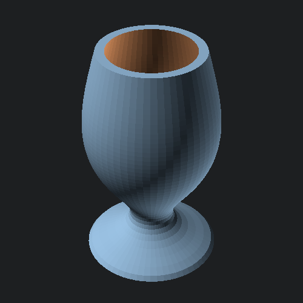

open Scad_ml
let f ~z ~a:_ = Float.(5. *. (cos (log ((z /. 5.) +. 1.) *. pi) +. 2.))
let outer = Mesh.axial_plot ~min_z:0. ~z_steps:50 ~max_z:50. f
let inner = Mesh.axial_plot ~min_z:2. ~z_steps:50 ~max_z:51. (fun ~z ~a -> f ~z ~a -. 2.)Convert our mesh into an OpenSCAD polyhedron and output to file.
let () =
Scad.to_file "axial_chalice.scad"
@@ Scad.difference (Mesh.to_scad outer) [ Mesh.to_scad inner ]